Visualization
Telling stories with plots in R
Welcome back! This weeks session will introduce you to the most important visualization approaches in R. 🎨
We will learn the fundamentals of data visualization with ggplot including bar plots, scatter plots, density plots, boxplots, histograms, correlation plots, heat maps, etc.
Introduction to ggplot2
ggplot2 is by far the most popular visualization package in R. ggplot2 implements the grammar of graphics to render a versatile syntax of creating visuals. The underlying logic of the package relies on deconstructing the structure of graphs (if you are interested in this you can read this article). You can access the data visualization with ggplot2 cheat sheet here.
For the purposes of this introduction to visualization with ggplot, we care about the layered nature of visualizing with ggplot2.

Our building blocks 🧱
- Data: the data frame, or data frames, we will use to plot
- Aesthetics: the variables we will be working with
- Geometric objects: the type of visualization
- Theme adjustments: size, text, colors etc
Data
The first building block for our plots are the data we intend to map. In ggplot2, we always have to specify the object where our data lives. In other words, you will always have to specify a data frame, as such:
ggplot(name_of_your_df)In the future, we will see how to combine multiple data sources to build a single plot. For now, we will work under the assumption that all your data live in the same object. Remember what you learned about dplyr::left_join() and broom::augment() etc. to combine data sets or to complement your original data set with information from models (e.g. fitted values).
Aesthetics
The second building block for our plots are the aesthetics. We need to specify the variables in the data frame we will be using and what role they play.
To do this we will use the function aes() within the ggplot() function after the data frame.
ggplot(name_of_your_df, aes(x = your_x_axis_variable, y = your_y_axis_variable))Beyond your axis, you can add more aesthetics representing further dimensions of the data in the two dimensional graphic plane, such as: size, color, fill, to name a few.
Geometric objects
The third layer to render our graph (to make it a specific type of graph, e.g. bar plot, scatter plot, etc.) is a geometric object. To add one, we need to add a plus (+) at the end of the initial line and state the type of geometric object we want to add, for example, geom_point() for a scatter plot, or geom_bar() for bar plots. For an overview of the most important functions and geoms available through ggplot2, see the ggplot2 cheat sheet.
ggplot(name_of_your_df, aes(x = your_x_axis_variable, y = your_y_axis_variable)) +
geom_point()Theme and Axes
At this point our plot may just need some final touches. We may want to fix the axes names or get rid of the default gray background. To do so, we need to add an additional layer preceded by a plus sign (+).
If we want to change the names in our axes, we can utilize the labs() function.
We can also employ some of the pre-loaded themes, for example, theme_minimal().
ggplot(name_of_your_df, aes(x = your_x_axis_variable, y = your_y_axis_variable)) +
geom_point() +
theme_minimal() +
labs(x = "Name you want displayed",
y = "Name you want displayed")pacman::p_load(
tidyverse,
foreign,
palmerpenguins,
haven,
gapminder,
gridExtra,
viridis
)
df <- gapminder # let's make a copy of the data to save some characters
str(df)Exercise 1 - Your first plot 🐧
For your first plot using ggplot2, we will use the penguins data again.
We would like to create a scatter plot that illustrates the relationship between the length of a penguin’s flipper and their weight.
To do so, we need three of our building blocks: a) data, b) aesthetics, and c) a geometric object (geom_point()).
Once we have our scatterplot. Can you think of a way to adapt the code to:
- convey another dimension through color, the species of penguin
- change the axes names
- render the graph with
theme_minimal().
- render the graph with
If you want to know more about the par(mar, mgp, las) function - apparently, it used to be an R Function of the Day.
That was a first shot to understand the basic structure of the layers. Let’s have a closer look at what plot types makes sense in which situations. The question is, how can we convey the information most effectively?
Plotting distributions 📊
If we are interested in plotting distributions of our data, we can leverage geometric objects, such as:
geom_histogram(): visualizes the distribution of a single continuous variable by dividing the x axis into bins and counting the number of observations in each bin (the default is 30 bins).geom_density(): computes and draws kernel density estimate, which is a smoothed version of the histogram.geom_bar(): renders barplots and in plotting distributions behaves in a very similar way fromgeom_histogram()(can also be used with two dimensions)geom_boxplot(): box-plots can show distributions of variables across groups (you could also consider them as plots for relationships: between a continuous and a categorical variable)
Histograms
Histograms graph the distribution of continuous variables. In this first example, we graph the distribution of the life expectancy variable (i.e. lifeExp).
summary(df$lifeExp)## Min. 1st Qu. Median Mean 3rd Qu. Max.
## 24 48 61 59 71 83ggplot(df,
aes(x = lifeExp)) +
geom_histogram()
Which conclusions do you draw from the histogram above about the distribution of life expectancy in the world?
The distribution is not normal (i.e. not a bell curve). It is bimodal with a skew to the left. There is a cluster of country-year observations that has a lower life expectancy (approximately 45-60 years), and a cluster of countries with much higher life expectancies (approx 70 years).
The default number of bins is 30, which means that the entire range of the variable (here 23.60 to 82.60) is split into 30 equally spaced bins. We can change the number of bins manually. Below, we specify 60 bins to approximate a binwidth of 1 year, taking into account the range of the variable lifeExp.
min(df$lifeExp) - max(df$lifeExp) # approx 60 years## [1] -59ggplot(df,
aes(x = lifeExp)) +
geom_histogram(bins = 60)
What if we specified just 5 bins?
Density plots
We saw that the shape of the distribution is highly influenced by how many bins we specify. If we specify too few bins, we run the risk of masking a lot of variation within the bins. If we specify too many bins, we trade parsimony for detail – which might make it harder to draw conclusions about the overall distribution of the variable of interest from the graph.
Density plots are continuous alternatives to histograms that do not rely on bins. We will not cover details about the mechanics behind density plots and their estimation here. Just know that we can interpret the height of the density curve in a similar way that we interpreted the height of the bars in a histogram: The higher the curve, the more observations we have at that specific value of the variable of interest. In this first example, we use the geom_density() function to create the density plot.
ggplot(df,
aes(x = lifeExp)) +
geom_density()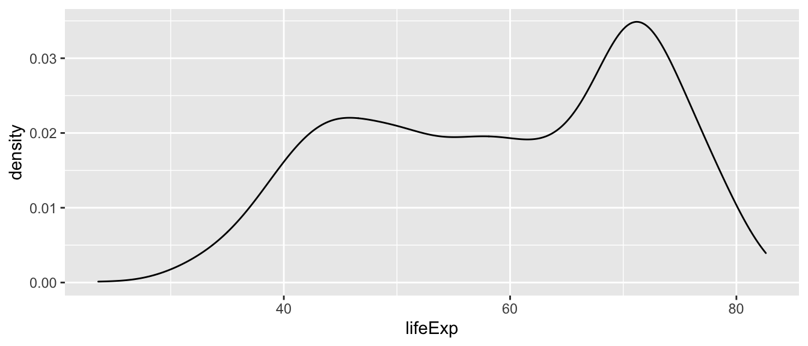
If you do not want the density graph to be plotted as a closed polygon, you can instead use the geom_line() geometric object function with the stat = "density" parameter.
ggplot(df,
aes(x = lifeExp)) +
geom_line(stat = "density")Boxplots 📦
Another way to show the distribution of variables across groups are boxplots. Boxplots graph different properties of a distribution:
- The borders of the box denote the 25th and 75th percentile.
- The line within the box denotes the median.
- The position of the whiskers (vertical lines) denote the first quantile value minus 1.5 times the interquartile range and the third quantile value plus 1.5 times the interquartile range. We will not go into details here.
- Dots denote outliers (values that lie outside the whiskers), if applicable.
In ggplot2 we can graph boxplots across multiple variables using the geom_boxplot() geometric object. Here, the continuous variable (i.e. lifeExp) should be specified as the y variable, and the categorical variable (i.e. continent) as the x variable.
We can flip the axes by using the coord_flip() command.
ggplot(subset(df),
aes(x = continent,
y = lifeExp)) +
geom_boxplot() +
labs(title = "Distribution of global life expectancy 1952-2007",
subtitle = "Data source: Gapminder package",
x = "Continent",
y = "Life expectancy in years") +
theme_bw() +
coord_flip()
Violin Plots 🎻
A violin plot is a compact display of a continuous distribution. It is a blend of geom_boxplot() and geom_density(): a violin plot is a mirrored density plot displayed in the same way as a boxplot.
ggplot(subset(df),
aes(x = continent,
y = lifeExp)) +
geom_violin() +
labs(title = "Distribution of global life expectancy 1952-2007",
subtitle = "Data source: Gapminder package",
x = "Continent",
y = "Life expectancy in years") +
theme_bw() +
coord_flip()
Exercise 2 - Distributions
This is a histogram presenting the weight distribution of penguins in our sample. Let’s adapt the code of our histogram:
- add
bins = 15argument - try out different numbers
- add
- add
fill = "#FF6666"(type “red”, “blue”, instead of #FF6666)
- add
- change the geom to
_densityand_bar
- change the geom to
- think about what data would be good to display in a box plot or violin plot?
Plotting relationships 🤝
Scatterplots
In their basic form, scatter plots are used to display values of two variables on a Cartesian coordinate system. Below, we inspect the relationship between GDP per capita and life expectancy.
ggplot(df,
aes(x = gdpPercap,
y = lifeExp)) +
geom_point() +
labs(title = "Economic wealth and life expectancy",
x = "GDP per capita",
y = "Life expectancy") +
theme_light()
The plot above shows a large amount of clustering (and overplotting) on the left side of the plot, while the right side of the plot is sparsely populated with data. This makes it hard to gauge the relationship between the two variables. Below, we make a number of adjustments to the graph to better display the relationship.
ggplot(df,
aes(x = gdpPercap,
y = lifeExp)) +
geom_point(alpha = 0.4,
size = 0.5) +
labs(title = "Economic wealth and life expectancy",
x = "GDP per capita",
y = "Life expectancy") +
theme_light()
Scaling the data
One reason why the plot above is hard to read is rooted in the shape of the distribution of the GDP per capita variable. GDP per capita has a strong right skew (yes, right, look at where the tail of the distribution is). Below I am plotting the average on top of the graph using the geom_vline().
av = mean(df$gdpPercap)
ggplot(df,
aes(x = gdpPercap)) +
geom_line(stat = "density") +
labs(title = "Untransformed distribution") +
geom_vline(xintercept = av, color = "red")
We can correct for this skew and transform the variable to have a more “normal” distribution by taking the logarithm with base 10. There are multiple ways to do this.
- Create a new variable [not shown below]
- Take the natural logarithm within the
aes()statement when specifying the variable to be displayed. - Using (scales)[https://ggplot2.tidyverse.org/reference/scale_continuous.html] to transform the display. Note that the data is transformed before properties such as the range of the axis are determined.
par(mar = c(4, 4, .1, .1))
ggplot(df,
aes(x = log10(gdpPercap))) +
geom_line(stat = "density") +
labs(title = "Applying log10 to variable directly") +
geom_vline(xintercept = log10(av), color = "red")
# Note below that we do NOT need to specify the av in terms of log10
# The entire x-axis is transformed
ggplot(df,
aes(x = gdpPercap)) +
geom_line(stat = "density") +
labs(title = "Transformation using scales") +
scale_x_log10() +
geom_vline(xintercept = av, color = "red")
# Bonus: alternatively could also use scale_x_continuous(trans = "log10") 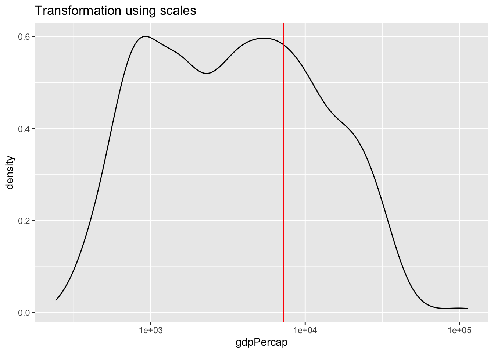
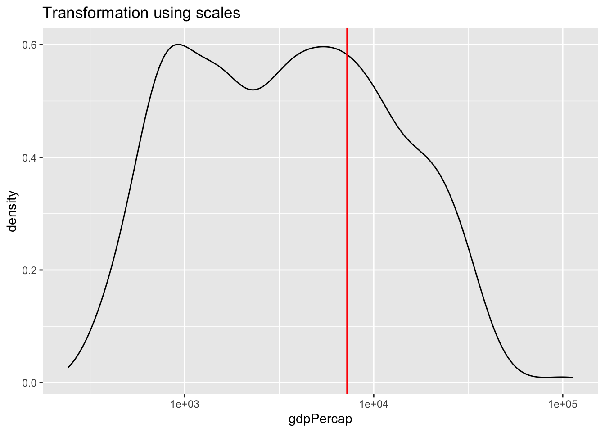
Can you explain the differences between the plot applying the natural log to the variable within the aes() function versus using scale_x_continuous().
Transforming the variable using the natural logarithm within aes() causes the x-axis to be displayed in log values. Using scale_x_continuous(), the data is transformed in the same way, however, the x-axis is displayed in the original, non-logged version.
We can use the same principle in bivariate (or multivariate) displays of data. Below, I use the scale transformation on the variable and reflect it in the axis label clarify that it is the relationship between life expectancy and the logarithm of GDP per capita that has a strong positive relationship.
ggplot(df,
aes(x = log(gdpPercap),
y = lifeExp)) +
geom_point(alpha = 0.4,
size = 0.5) +
labs(title = "Economic wealth and life expectancy",
x = "GDP per capita (log10)",
y = "Life expectancy") +
theme_light()
Adding trend lines
The plot above illustrates a strong positive relationship between GDP per capita and life expectancy. We can highlight the direction and strength of the relationship by adding a trend line using the geom_smooth() aesthetic.
The default smoothing method is loess for less than 1,000 observations and gam (Generalized Additive Models) for observations greater or equal to 1,000. ggplot2 informs us which smoothing method was used via a message. By default, a 95% confidence interval is added to the trend line. It shows that the negative relationship at higher values of GDP per capita has a much lower precision than the positive relationship we observe for the majority of the observations.
par(mar = c(4, 4, .1, .1))
ggplot(df,
aes(x = log(gdpPercap),
y = lifeExp)) +
geom_point(alpha = 0.4,
size = 0.5) +
labs(title = "Economic wealth and life expectancy",
x = "ln GDP per capita",
y = "Life expectancy") +
theme_light() +
geom_smooth()
#Alternatively, we can add a linear trend line to the data.
ggplot(df,
aes(x = log(gdpPercap),
y = lifeExp)) +
geom_point(alpha = 0.4,
size = 0.5) +
labs(title = "Economic wealth and life expectancy",
x = "ln GDP per capita",
y = "Life expectancy") +
theme_light() +
geom_smooth(method = "lm")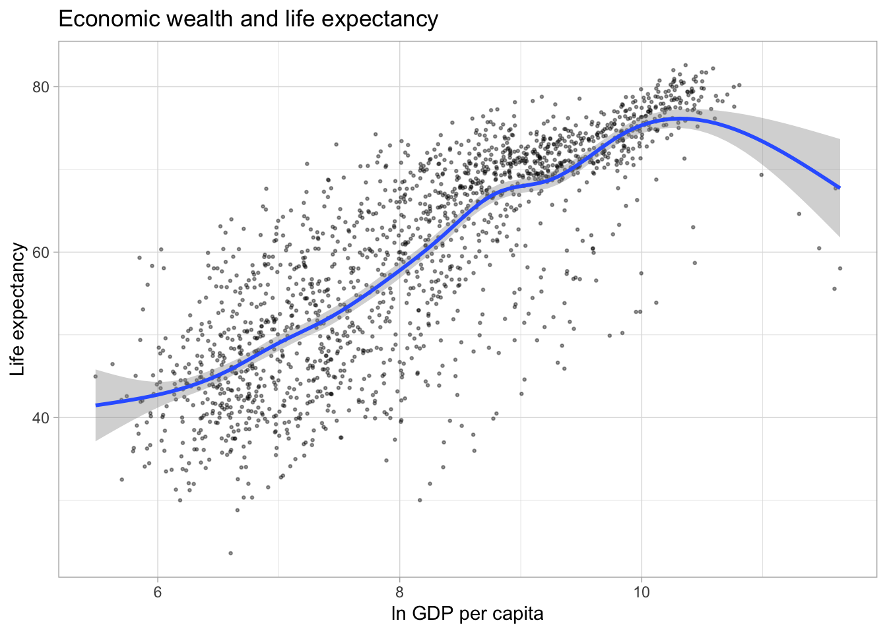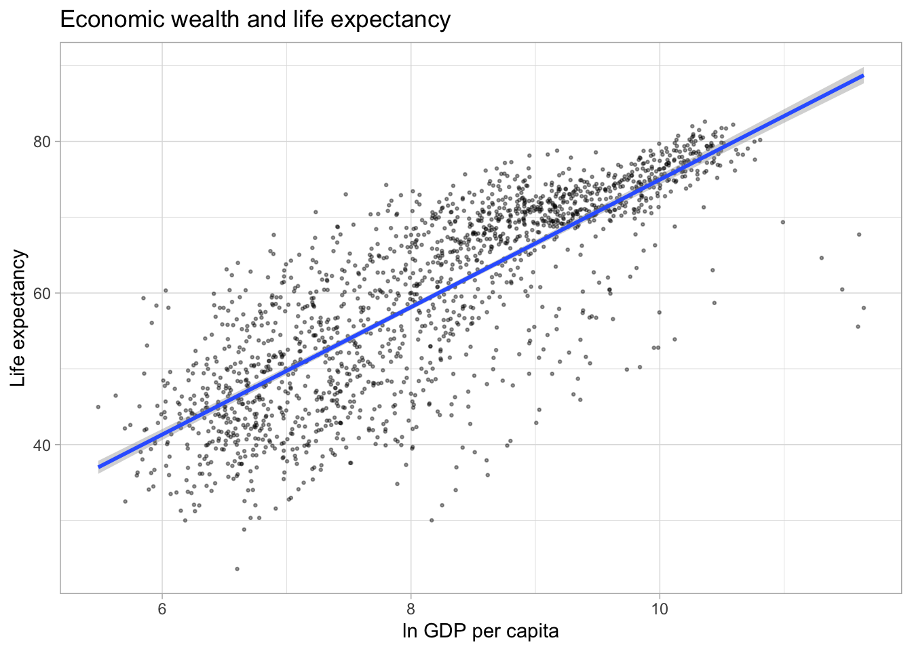
Finally, we can display separate trendlines for groups of data. For example, suppose we wanted to know how the relationship between GDP per capita and life expectancy varies by continent. We can pass the grouping variable to the color (and/or linetype) parameter within the aes() function. Below, I further reduce the opacity of the points to avoid overplotting. Note that the color grouping is passed to both the geom_point() and the geom_smooth() aesthetic.
ggplot(df,
aes(x = log(gdpPercap),
y = lifeExp,
color = continent)) +
geom_point(alpha = 0.2,
size = 1) +
labs(title = "Economic wealth and life expectancy",
x = "ln GDP per capita",
y = "Life expectancy") +
theme_light() +
geom_smooth(method = "lm")## `geom_smooth()` using formula 'y ~ x'
Line plots
Line plots are particularly useful for time series data. Below, we will graph the GDP per capita development of China from 1952 to 2007. We select the data for China by using the subset() function on the original data frame.
par(mar = c(4, 4, .1, .1))
ggplot(subset(df, country == "China"),
aes(x = year,
y = gdpPercap)) +
geom_line()
# We can add points to the line to highlight which observations are available in the underlying data.
ggplot(subset(df, country == "China"),
aes(x = year,
y = gdpPercap)) +
geom_line() +
geom_point()

NOTE: For advanced examples of line graphs using spaghetti plots please see this GitHub page.
Heatmaps
Heatmaps are another great way to illustrate trends for many different groups in data. Suppose, we were interested in the strength of the correlation between life expectancy and GDP per capita over time and space.
Below, we use our data wrangling skills from the last sessions to compute the correlation between the variables lifeExp and gdpPercap for each continent. Note that we exclude “Oceania” for this exercise.
# Compute Pearson correlation coefficient by year and continent
cors <- df %>%
filter(continent != "Oceania") %>%
group_by(continent, year) %>%
summarise(cor = cor(lifeExp, log10(gdpPercap)))## `summarise()` has grouped output by 'continent'. You can override using the `.groups` argument.We can use the geom_tile() geom to create the heatmap; specifying the variable we want to display in color via the fill command. We can improve the left plot in a number of ways. First, the color scheme is not necessarily intuitive. The colors aren’t separated enough to best display smaller differences in the correlation coefficient, because they are based on the same hue. We can customize out colors to display a gradient with multiple hues.
par(mar = c(4, 4, .1, .1))
ggplot(cors,
aes(x = year, y = continent, fill = cor)) +
geom_tile()
ggplot(cors,
aes(x = year, y = continent, fill = cor)) +
geom_tile() +
scale_fill_gradient(low = "darkblue", high = "red")

We can also use existing color gradient schemes to better distinguish values in our plot. Below, we use color scales from the viridis package. We also give the legend a more informative title.
Using color scales from the viridis package is a favorite among many who use R for data visualization. First developed for matplotlib in Python, this palette offers the following advantages:
- It is visually appealing
- Perceptual uniformity: visual perception of change is proportionate to incremental changes in the data.
- High contrast: optimal for printing in black-and-white and easier to read for people with color blindness1
Second, we know that the correlation coefficient ranges from -1 to 1. We only have positive values here and they range from approximately 0.3 to 0.9. It is good practice to show at least one end point of the possible values in legends or axes. Therefore, below we extend the legend to display values from 0 to 1.
par(mar = c(4, 4, .1, .1))
ggplot(cors,
aes(x = year, y = continent, fill = cor)) +
geom_tile() +
scale_fill_viridis(option = "inferno", name = "Correlation")
range(cors$cor)## [1] 0.32 0.86ggplot(cors,
aes(x = year, y = continent, fill = cor)) +
geom_tile() +
scale_fill_viridis(option = "inferno", name = "Correlation",
limits = c(0, 1))

Bonus: To improve on this graph, we can add some of the other elements offered by the ggplot2 package.
ggplot(cors,
aes(x = year, y = continent, fill = cor)) +
geom_tile(color = "white") +
scale_fill_viridis(option = "inferno", name = "Correlation\ncoefficient",
limits = c(0, 1)) +
labs(x = "",
y = "",
title = "Correlation between life expectancy and GDP per capita") +
# Changing appearance of the plot
theme_light() +
theme(panel.grid = element_blank(),
legend.position = "bottom",
legend.key.width = unit(1.5, "cm"),
panel.border=element_blank(),
axis.ticks = element_blank()) +
# Adjust x axis labels
scale_x_continuous(breaks = unique(cors$year)) +
# Reduce space between plot and labels
coord_cartesian(expand = 0)
Barplots
Suppose we wanted to visualize global population growth over time. We might first want to compute the total population per continent and year.
globalpop <- df %>%
group_by(continent, year) %>%
# Need to transform int to num to prevent integer overflow
summarise(pop_tot = sum(as.numeric(pop)))ggplot2() is pretty nice and it just stacked each continent’s population on top of each other. This is nice because it it automatically allows us to visualize the sum across continents. Try to verify that the height of each bar is truly the sum of all continents’ population. - We could illustrate that these are indeed separate continents by passing a fill argument within aes(). If we instead wanted a separate bar for each continent, we can use the position parameter within geom_col().
par(mar = c(4, 4, .1, .1))
# stacked
ggplot(globalpop,
aes(x = year, y = pop_tot, fill = continent)) +
geom_col()
# separate bars
ggplot(globalpop,
aes(x = year, y = pop_tot, fill = continent)) +
geom_col(position = position_dodge())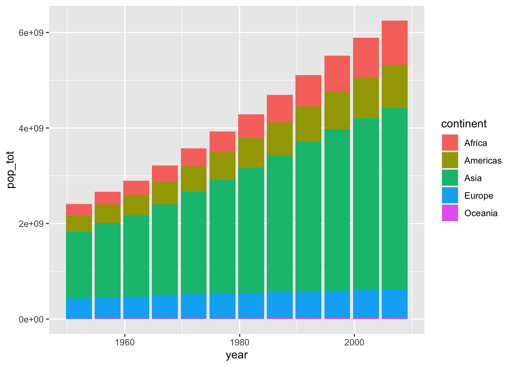
Suppose we wanted to know which countries in Europe are shrinking and which countries are growing their population. We can use our data wrangling skills to compute the first difference of population, i.e. the current value minus the previous year’s value.
diff07 <- df %>%
group_by(country) %>%
arrange(year) %>%
mutate(fd = pop - dplyr::lag(pop))Below, we plot the first difference for European countries in 2007.
ggplot(subset(diff07, continent == "Europe" & year == 2007),
aes(x = country, y = fd)) +
geom_col()
This is really hard to see. Lets flip the axes using coord_flip(). This could useful because countries are ordered alphabetically, but visually, it is is confusing. Let’s reorder the country axis based on the value of the population change. The default is ro order the points in ascending order from the origin.
par(mar = c(4, 4, .1, .1))
ggplot(subset(diff07, continent == "Europe" & year == 2007),
aes(x = country, y = fd)) +
geom_col() +
coord_flip()
ggplot(subset(diff07, continent == "Europe" & year == 2007),
aes(x = reorder(country, fd), y = (fd/1e+6))) +
geom_col() +
coord_flip() +
labs(x = "", y = "Population change in millions")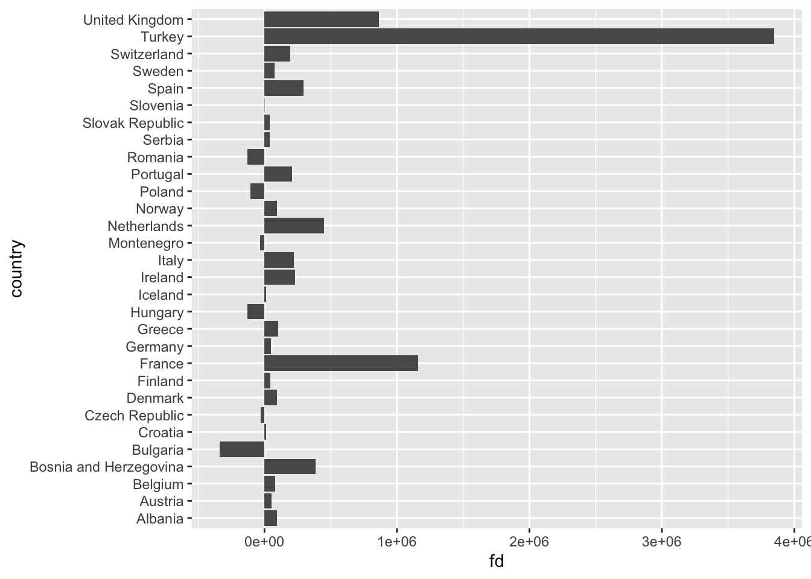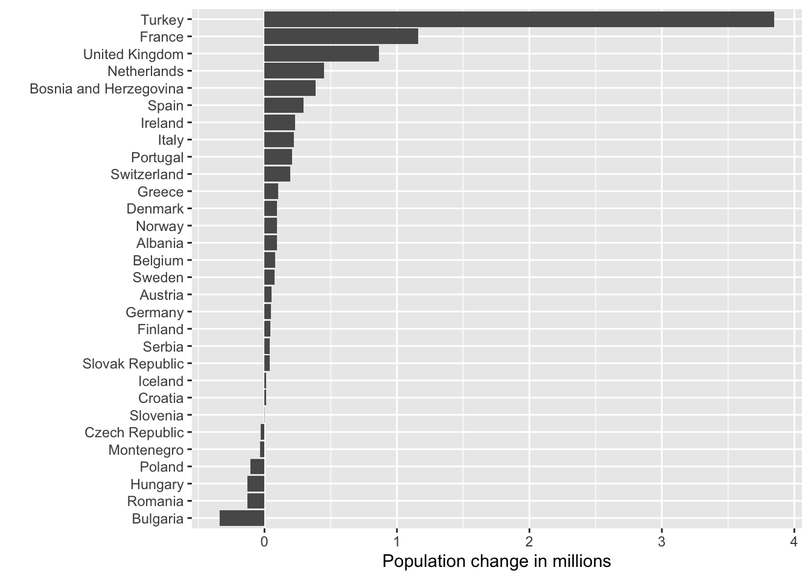
Exercise 3 - Relationships
You now know that we can utilize graphs to explore how different variables are related. In fact, we did so before in our very first scatterplot. We can also use box plots and lines to show some of these relationships.
- Create a boxplot showcasing the distribution of weight by species.
- Adapt our very first plot with lines that best fit the observed data by species.
par(mar = c(4, 4, .1, .1))Graph appearance 💅
The default graphs we have produced so far are not (yet) ready for publication. In particular, they lack informative labels. In addition, we might want to change the appearance of the graph in terms of size, color, linetype, etc.
Title, subtitle, and axes titles
ggplot(df,
aes(x = lifeExp)) +
geom_line(stat = "density") +
labs(title = "Distribution of global life expectancy 1952-2007",
subtitle = "Data source: Gapminder package",
x = "Life expectancy in years",
y = "Density")
Axis ranges
By default, ggplot() adjusted the x-axis to start not at zero but at approximately 23 to reduce the amount of empty space in the plot. We can manually adjust the range of the axes using the coord_cartesian() parameter.
ggplot(df,
aes(x = lifeExp)) +
geom_line(stat = "density") +
labs(title = "Distribution of global life expectancy 1952-2007",
subtitle = "Data source: Gapminder package",
x = "Life expectancy in years",
y = "Density") +
coord_cartesian(xlim = c(0, 85))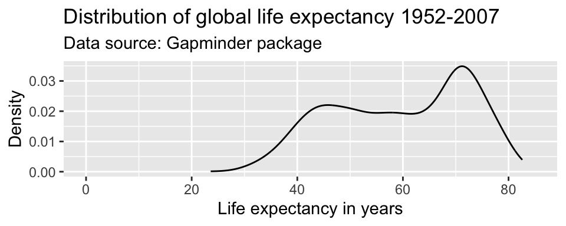
Caution!! You will sometimes see the command scale_y_continuous(limits = c(0, 85)) instead of coord_cartesian(ylim = c(0, 85)). Note that these are not the same. coord_cartesian() only adjusts the range of the axes (it “zooms” in and out), while scale_y_continuous(limits = c()) subsets the data. For density plots, this does not make a difference. But there are other examples where it alters the actual shape of the graph, rather than just the part of the graph that is visible.
Coloring
Any changes to the appearance of the curve itself are made within the argument that specifies the geometric object to be plotted, here geom_line(). R knows many colors by name; for a great overview see this resource.
par(mar = c(4, 4, .1, .1))
ggplot(df,
aes(x = lifeExp)) +
geom_density(color = "darkblue") +
labs(title = "Distribution of global life expectancy 1952-2007",
subtitle = "Data source: Gapminder package",
x = "Life expectancy in years",
y = "Density")
ggplot(df,
aes(x = lifeExp)) +
geom_density(color = "#2727ff") +
labs(title = "Distribution of global life expectancy 1952-2007",
subtitle = "Data source: Gapminder package",
x = "Life expectancy in years",
y = "Density")

We can also use hexadecimal or RGB (red, green, blue) strings to specify colors. There are plenty of online tools to pick colors and extract hexadecimal or RBG strings. One of my favorites is this one. This online tool allows you to specify a color name, hexadecimal, or RGB string, and returns information on color schemes, complementary colors, as well as alternative shades, tints, and tones. It also offers a color blindness simulator.
Suppose, I like the general tone of the darkblue color above, but am worried that it is a bit too dark for my plot. I enter the color “darkblue” into the search field at http://www.colorhexa.com and look for a brighter alternative. Suppose I really like the color displayed in the second tile from the left on the tints scale. I can extract this color’s hexadecimal value of #2727ff by hovering over the tile of that color.
Another good source for color schemes is colorbrewer2, which also has an R binding, RColorBrewer.
Line types and width
We can adjust the type of the line via the linetype parameter within geom_line(). For an overview of line types see here.
We can adjust the width of the line via the size parameter within geom_line(). Note that the size parameter is universal in the way that it controls line width in line plots and point size in scatter plots.
par(mar = c(4, 4, .1, .1))
ggplot(df,
aes(x = lifeExp)) +
geom_line(stat = "density",
color = "#2727ff",
linetype = "dotdash") +
labs(title = "Distribution of global life expectancy 1952-2007",
subtitle = "Data source: Gapminder package",
x = "Life expectancy in years",
y = "Density")
ggplot(df,
aes(x = lifeExp)) +
geom_line(stat = "density",
color = "#2727ff",
linetype = "dotdash",
size = 2) +
labs(title = "Distribution of global life expectancy 1952-2007",
subtitle = "Data source: Gapminder package",
x = "Life expectancy in years",
y = "Density")

Opacity
We can adjust the opacity via the alpha parameter within any geometric object. The alpha parameter ranges between zero and one. Adjusting the opacity of the geometric objects is especially important when plotting multiple lines, points (or other objects) in the same graph to reduce overplotting.
ggplot(df,
aes(x = log(gdpPercap),
y = lifeExp)) +
geom_point(alpha = 0.4, color = "#2727ff") +
labs(title = "Economic wealth and life expectancy",
x = "GDP per capita (log10)",
y = "Life expectancy") +
theme_light()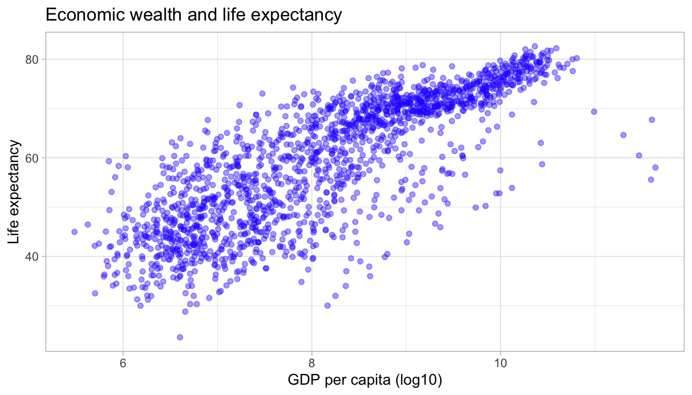
Symbols/shapes
We can adjust the default symbol used by ggplot2 to display the points. The parameter is called shape.
We can also have groups of data displayed using different point shapes. Below, we group by continent. We subset the data to just the year 2007 to de-clutter the plot.
par(mar = c(4, 4, .1, .1))
ggplot(df,
aes(x = log(gdpPercap),
y = lifeExp)) +
geom_point(alpha = 0.4,
size = 0.5,
shape = 4) +
labs(title = "Economic wealth and life expectancy",
x = "GDP per capita (log10)",
y = "Life expectancy") +
theme_light()
ggplot(subset(df, year == 2007),
aes(x = log(gdpPercap),
y = lifeExp,
shape = continent)) +
geom_point() +
labs(title = "Economic wealth and life expectancy",
subtitle = "2007",
x = "GDP per capita (log10)",
y = "Life expectancy") +
theme_light()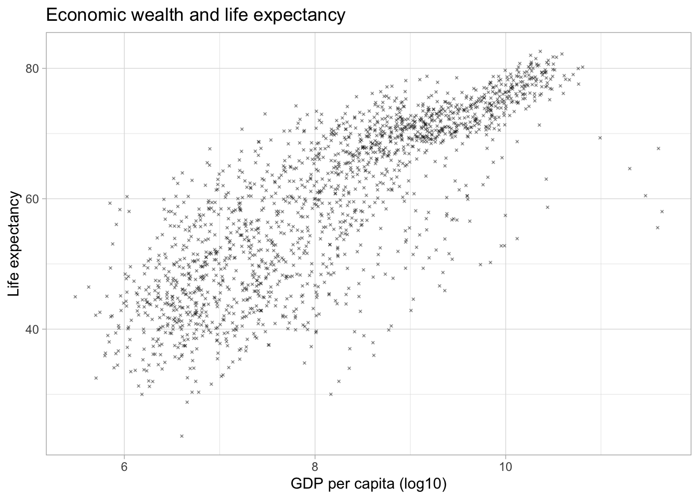
Themes
We can alter the appearance of any element in the plot. Below, we change the pre-specified theme that ggplot2 uses to determine the appearance of the plot. Popular options are theme_bw(), theme_minimal() or theme_light(). For a full list of themes, see ggtheme.
Comparing groups 🍎🍐
Using different colors
Sometimes, we want to compare distributions across different groups in our data set. Suppose, we wanted to assess the distribution of the life expectancy on different continents. We can use the table() function to get an overview over the groups in our data.
table(df$continent)##
## Africa Americas Asia Europe Oceania
## 624 300 396 360 24We pass a separate color to the distribution of the lifeExp for each continent by specifying the color parameter within the aesthetics. Remember, to remove the color parameter from the geom_line() function. The ability to pass a second variable to the graph with just one aesthetic (here: color) is where the true power of ggplot2 for data visualization lies.
ggplot(df,
aes(x = lifeExp,
color = continent)) +
geom_line(stat = "density") +
labs(title = "Distribution of global life expectancy 1952-2007",
subtitle = "Data source: Gapminder package",
x = "Life expectancy in years",
y = "Density") +
theme_bw()
What is the difference between specifying the color parameter outside the aes() argument versus within the aes() argument?
If the color parameter is specified outside the aes() argument, one color is passed all geometric objects of the same type. If the color parameter is specified within the aes() argument, different colors are passed to each value of the variable that is passed to the color parameter. A separate geometric object will be plotted for value–each in a different color.
We can adjust the colors used in the plot in a variety of ways. Below, we first use the scale_color_manual() function. This will change the colors in both the plot and the legend, based on our manual specification. Within the scale_color_manual() argument, we can also specify a name and labels for the legend.
There are a ton of resources and packages with pre-defined color schemes. The most popular is colorbrewer2. You can either pick the desired colors manually, or use the scale_color_brewer() function in ggplot2().
par(mar = c(4, 4, .1, .1))
ggplot(df,
aes(x = lifeExp,
color = continent)) +
geom_line(stat = "density") +
labs(title = "Distribution of global life expectancy 1952-2007",
subtitle = "Data source: Gapminder package",
x = "Life expectancy in years",
y = "Density") +
theme_bw() +
scale_color_manual(values = c("Africa" = "darkorange",
"Americas" = "darkblue",
"Europe" = "darkgreen",
"Asia" = "darkred",
"Oceania" = "purple2"),
name = "Continent")
ggplot(df,
aes(x = lifeExp,
color = continent)) +
geom_line(stat = "density") +
labs(title = "Distribution of global life expectancy 1952-2007",
subtitle = "Data source: Gapminder package",
x = "Life expectancy in years",
y = "Density") +
theme_bw() +
scale_color_brewer(palette = "BrBG",
name = "Continent") 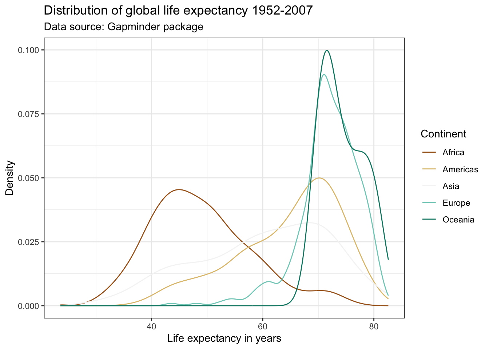
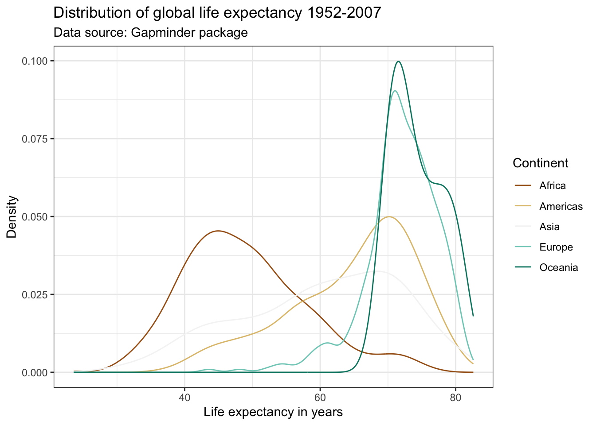
Check out the list of color palettes compiled by Emil Hvitfeldt. There is even a Wes Anderson movies inspired color scheme available using the package wesanderson! Another popular option are the color schemes from the viridis package due to their desirable properties with respect to colorblindness and printability.
Using different linetypes
Many academic journals will only accept graphs on a gray scale. This means that color will not be enough to differentiate five lines. We can use different line types instead by specifying the linetype parameter within the aes() argument. This also makes the graph more color blind friendly. Notice below that in order to combine the legends for the linetype and color aesthetics, we need to pass the same name within the scale function.
ggplot(df,
aes(x = lifeExp,
color = continent,
linetype = continent)) +
geom_line(stat = "density") +
labs(title = "Distribution of global life expectancy 1952-2007",
subtitle = "Data source: Gapminder package",
x = "Life expectancy in years",
y = "Density") +
theme_bw() +
scale_color_brewer(palette = "Set1",
name = "Continent") +
scale_linetype_discrete(name = "Continent")
Faceting
Another option to graph different groups is to use faceting. This means to plot each value of the variable upon which we facet in a different panel within the same plot. Here, we will use the facet_wrap() function.
ggplot(df,
aes(x = lifeExp)) +
geom_line(stat = "density") +
labs(title = "Distribution of global life expectancy 1952-2007",
subtitle = "Data source: Gapminder package",
x = "Life expectancy in years",
y = "Density") +
theme_bw() +
facet_wrap(~ continent, nrow = 1)
We can use the facet_grid() to create facets across more than one variable. Suppose, we were interested in the evolution of the distribution of the life expectancy over time for each continent.
Oceania causing the y-axis to have a large range, which makes the values for the other continents hard to see. There are different ways to deal with this (hint: check out the scales = "free" command). Below, we simply exclude Oceania, since it is only comprised of Australia and New Zealand. We can either create a new subsample data frame, or use the subset() command directly within ggplot().
ggplot(subset(df, continent != "Oceania"),
aes(x = lifeExp)) +
geom_line(stat = "density") +
labs(title = "Distribution of global life expectancy 1952-2007",
subtitle = "Data source: Gapminder package",
x = "Life expectancy in years",
y = "Density") +
theme_bw() +
facet_grid(year ~ continent)
Exercise 4 - Groups and Relationships
Create a plot to compare the GDP per capita development of the BRICS countries (Brazil, Russia, India, China, South Africa). Unfortunately, Russia (or previously the Soviet Union) is not part of the gapminder data, so we cannot display it in the plot. Please create a publication-ready graph that can be printed (do you have ideas what we could do for grayscale printing?).
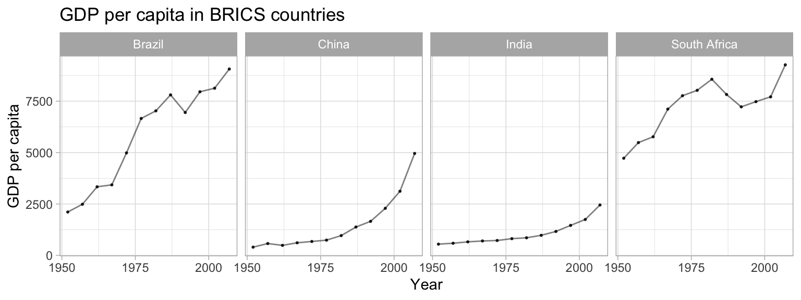
Saving plots 💾
We can output your plots to many different format using the ggsave() function, including but not limited to .pdf, .jpeg, .bmp, .tiff, or .eps. Here, we output the graph as a Portable Network Graphics (.png) file. We can specify the size of the output graph as well as the resolution in dots per inch (dpi). If no graph is specified, ggsave() will save the last graph that was executed. If we no not specify the complete file path, the plot will be saved to your working directory.
# ggsave("panel_lifeexp_continent.png", width = 6, height = 3, dpi = 400)Alternatively, we could save the plot as an R object and pass the object name to ggsave(). Also, remember our project folder structure we discussed in one of the first weeks. You might have an image or output folder in your project directory.
p1 <- ggplot(df,
aes(x = lifeExp)) +
geom_density()
#ggsave("lifeexp_dens.png", width = 3, height = 2, dpi = 300, p1)
# or, better folder structure:
#ggsave("output/images/lifeexp_dens.png", width = 3, height = 2, dpi = 300, p1)Manually, you could also visit the Plots pane in the RStudio interface and export the graph as image or pdf.
Oftentimes, we want our plots not only to be displayed side by side in an html output, but we actually want to save it as two(or more)-image file. The function grid.arrange() from the gridExtra package - see this vignette for more information- can be very helpful here.
p1 <- ggplot(df,
aes(x = lifeExp)) +
geom_density()
p2 <- ggplot(df,
aes(x = lifeExp)) +
geom_histogram()
p3 <- grid.arrange(p1, p2, nrow = 1)
p3## TableGrob (1 x 2) "arrange": 2 grobs
## z cells name grob
## 1 1 (1-1,1-1) arrange gtable[layout]
## 2 2 (1-1,2-2) arrange gtable[layout]#ggsave("lifeexp_double.png", width = 6, height = 2, dpi = 300, p3)Next steps 🎒
Now that you have been introduced to some of the basics of ggplot2, the best way to move forward is to experiment. As we have discussed before, the R community is very open. Perhaps, you can gather some inspiration from the Tidy Tuesday social data project in R where users explore a new dataset each week and share their visualizations and code on Twitter under #TidyTuesday. You can explore some of the previous visualizations here and try to replicate their code.
Here is a curated list of awesome ggplot2 resources. Other cool plot forms to check out are, for example, parallel plots, spaghetti plots, interactive plots, maps, three dimensional plots, network graphs, etc. Of course, there will also be some really cool visualization content in the workshops!!
In case you’re already thinking about Christmas gifts, want to have some more color on your walls or - just in case you are bored by this course, check out some generative art or play around with some open projects, for example, by Katharina Brunner, Ijeamaka or Sharla Gelfand - all conducted in R!
Sources
This tutorial is based largely on chapters 7 to 10 from the QPOLR book and Wilkinson, L., 2012. The grammar of graphics. In Handbook of Computational Statistics (pp. 375-414). Springer, Berlin, Heidelberg.
For more information about the logic behind developing the viridis palette, see this blog post.↩︎
A work by Lisa Oswald & Tom Arend
Prepared for Intro to Data Science, taught by Simon Munzert